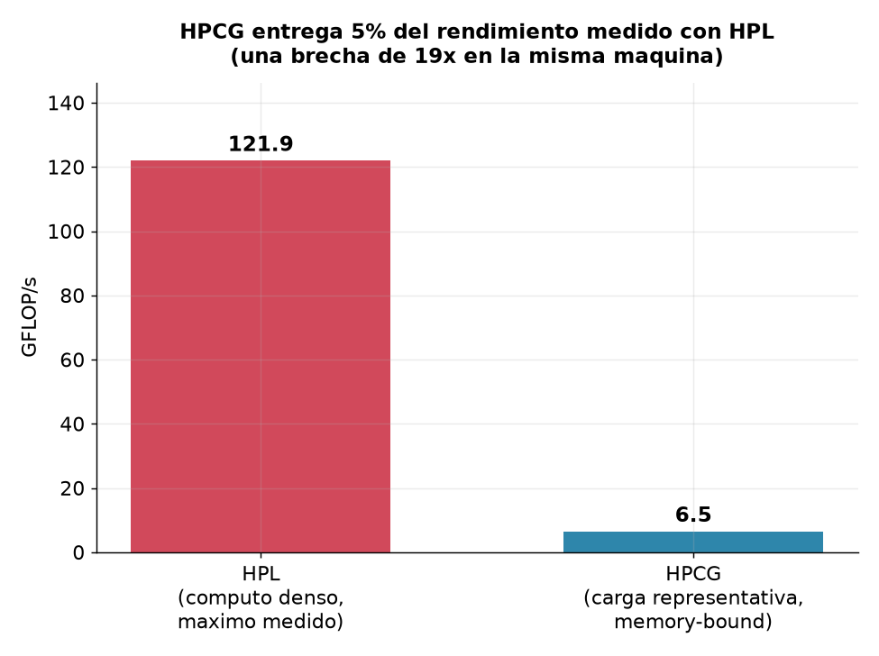
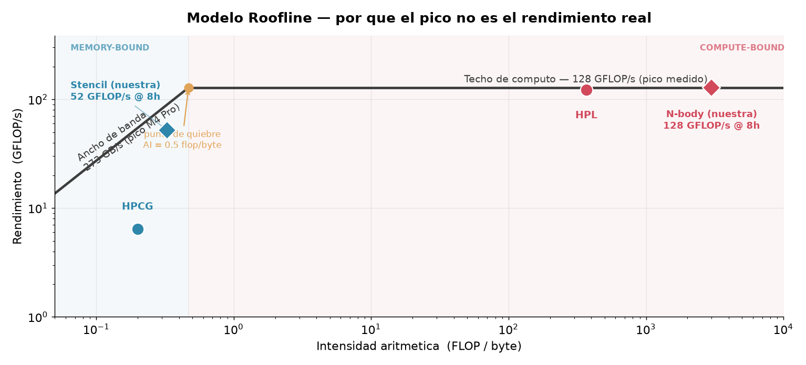
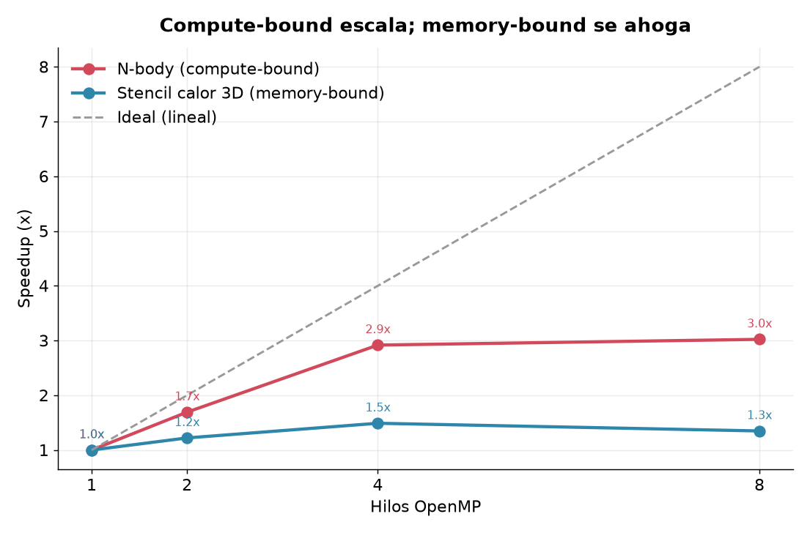

01
Ancho de banda
Mejorar localidad con blocking, reuso de datos y un layout consciente de caché.
Una máquina puede verse imparable en el folleto y quedarse esperando en el mundo real. La máquina no cambió. Cambió el trabajo.
Benchmark y rendimiento de aplicaciones paralelas
Luis Palacios · Diego · Roberto · Nico · Esteban
El Capitan, datos publicados en noviembre de 2025. Del máximo del hardware al trabajo representativo, la caída cambia la historia.

En nuestra Mac M4 Pro, HPL aprovecha el cómputo denso. HPCG tropieza con accesos dispersos y movimiento de memoria.
A la izquierda mandan los bytes. A la derecha, los FLOPs. Toda carga termina chocando contra un techo.

N-body sigue encontrando trabajo. Stencil satura el camino hacia la memoria: después de cuatro hilos, casi todo esfuerzo adicional se pierde.

Nuestra aplicación calcula interacción gravitacional directa. Las simulaciones científicas cambian el algoritmo para escalar, pero persiguen el mismo fenómeno: cómo la gravedad organiza el universo.
El benchmark deja de ser una cifra cuando entendemos qué ciencia intenta hacer posible.
Mejorar localidad con blocking, reuso de datos y un layout consciente de caché.
Detenerse en el punto de saturación. Más hilos pueden consumir sin acelerar.
Solapar cómputo y mensajes, reducir sincronizaciones y respetar la topología.
Favorecer algoritmos y librerías que hagan más operaciones por cada byte movido.
Controlar temperatura, entorno y repetición.
Primero hay que saber contra qué techo está chocando el código.
Luis Palacios · Diego · Roberto · Nico · Esteban
Universidad del Valle de Guatemala · Sección 20